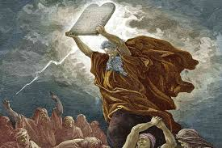
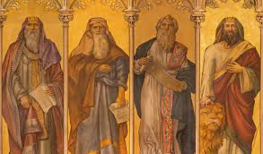
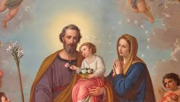
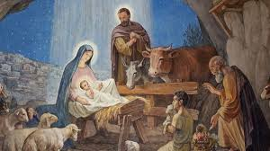
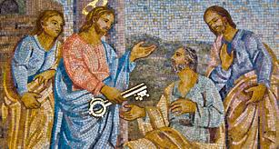
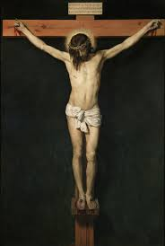
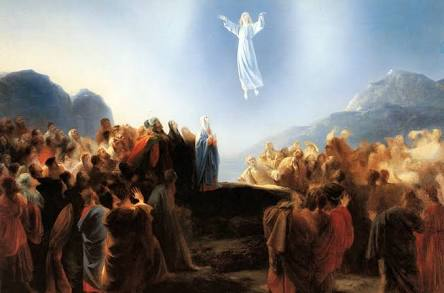

Before the church was formed
Pre - Church
Creation
God creates the earth and humanity, and it is good

The fall
Eve is convinced by the snake to eat the forbidden fruit, and she convinces Adam, signifying their ultimate original sin, and the need for a savior

Abraham
Called by God to create a great kingdom, ruled by his descendants. A kingdom that would bring in God’s will on Earth, led within the promised land. Abrahamic covenant that his descendants would outnumber the stars and inherit his kingdom.

Moses
Frees the Jews from oppression, but they ultimately struggle to follow God. Gave Commandments and Laws that form the heart of Jewish life

David
A man who is told that his descendant would be the savior of man. Also became king of Israel and established Jerusalem as the capital.
Prophets
The people who come in and correct Israel’s way. New Covenant promises to heal Israel’s sins and change their hearts

Mary and Joseph
Mary is told that she will have a child, and yet she is a Virgin. This birth will be the one who is the fulfillment of the covenant of David.

Jesus's birth
The messiah is born. Many come to see him, Magi, and shepherds

Jesus anoints Peter
Jesus anoints Peter as the rock on which he will build his church

Jesus' miracles
Jesus performs miracles and heals the sick, showing how he is the one who is the savior from earthly hardship
Jesus' death
Jesus’s ultimate sacrifice for humanity shows the new relationship between God and humanity, as God literally sacrificed himself for us. Shows that suffering can have meaning

Resurrection
Jesus conquers death. Shows that death and sin are not the end of the road, and that through the path of Jesus, we can conquer them as well.
Ascension
Jesus rises into heaven and tells the disciples that the spirit will come upon them

Pentecost
The Holy Spirit comes onto the disciples and gives them courage, as well as the gift of tongues so that they can go out and spread the word. Ultimately, it leads to the creation of the Church, and Peter as the first pope.